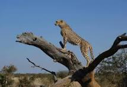

|

|
The Cheetah
One of the most recognizable animals in Kenya is the cheetah. These spotty cats-each
with their own unique patterns- are skilled hunters, in part because of their natural
speed and agility. In fact, chaetahs are the fastest mammals on earth. They can accelerate
from zero to 60 miles per hour in just three seconds. Another interesting cheetah fact?
Unlike lions, tigers, jaguars, and leopards, cheetahs can't roar they onæy purr.
These cats live and hunt in open grasslands across Africa.They can be found in
countries including Kenya, Algeria, South Africa and Niger.
The international Union for the conservation of Nature (IUCN) classes cheetahs
as vulnerable. This means the species is at high risk of extinction in the wild. There are
just 6,517 mature cheetahs left in the wild, and their population is decreasing. Cheetahs are
at a particular risk from habitat loss because they need such large range.Most cheetahs
live in unprotected areas, where they come into conflict with farmers.
|